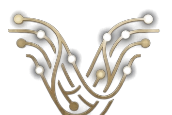

Veta Wallet · Tarjeta
GUARDÁS ORO. PAGÁS COMO SIEMPRE.
Tu saldo no es una promesa: es ORIGEN, oro real y certificado.

veta walletORIGEN
Oro certificado
Tu oro sigue siendo tuyo hasta el segundo en que pagás
Pagás en cualquier comercio, en la moneda del país
Una cuenta para todo el ecosistema, con tu Genesis ID
Pedí tu tarjeta
 Tu oro, en tu bolsillo
Tu oro, en tu bolsillo